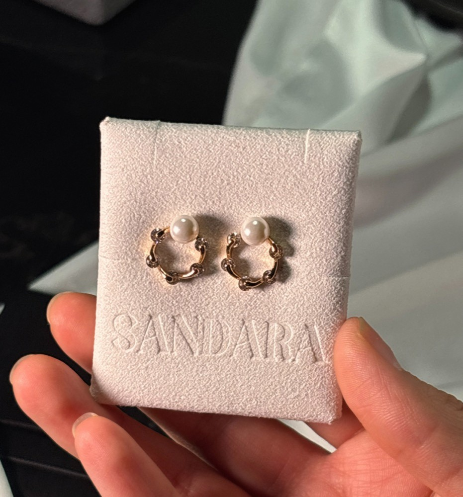

Envío gratis desde S/ 300 · Lima S/ 8 · Provincias S/ 20 · Paga con Yape o Plin

Portada (imagen de relleno; el video no está en el repositorio).
Actual
A · una línea
B · dos líneas
Simulación local · no es el sitio publicado